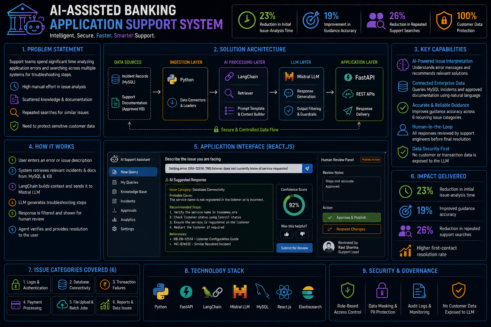
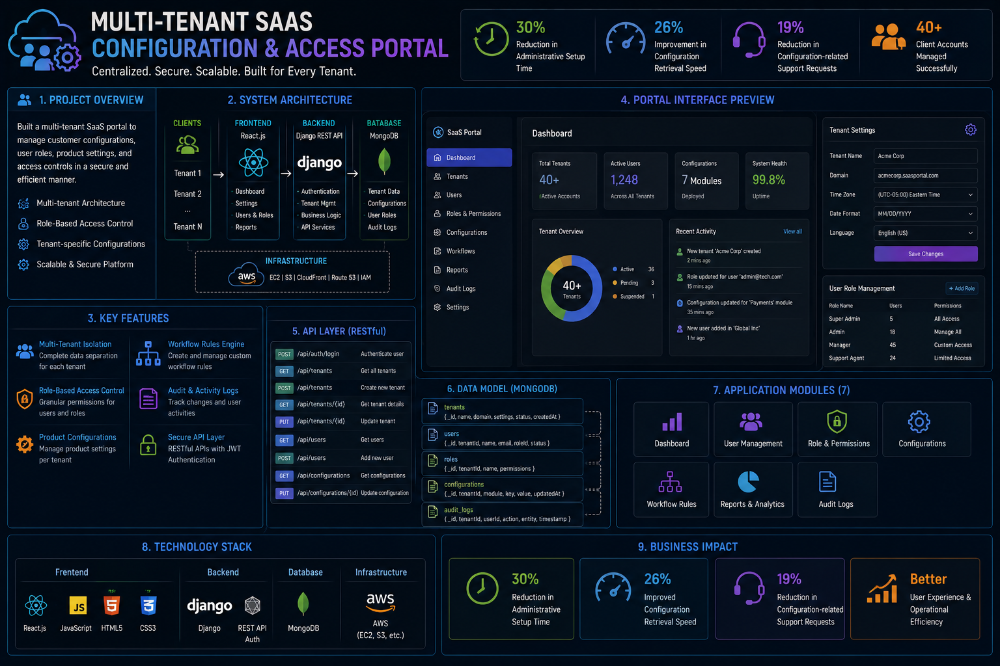
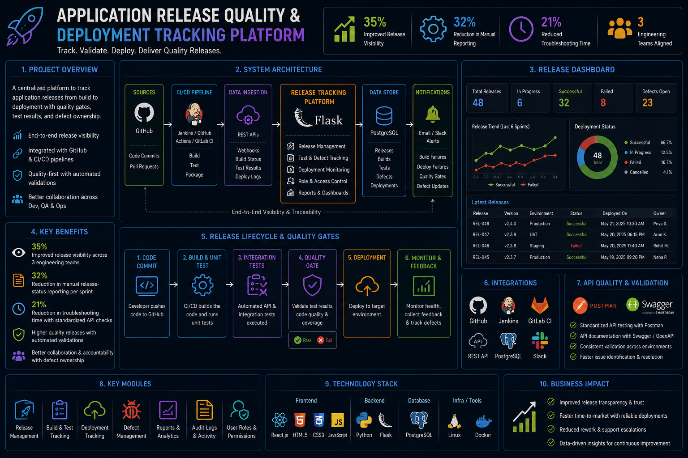

Cloud Engineering
AWS cloud-native platforms & Docker
Available for opportunities
Focused on building intelligent, scalable machine learning systems with real-world impact. Delivered production ML solutions at Apple and JPMorgan Chase across consumer and financial platforms. Specializing in NLP, LLM-powered pipelines, and end-to-end deployment on AWS.
I'm a Machine Learing Engineer with 4+ years of experience building and deploying production-grade ML and NLP systems across consumer and enterprise platforms. Specialized in LLMs, transformer-based models, fraud detection, and real-time inference with end-to-end ML ownership. Strong background in model optimization, scalable data pipelines, and cloud-native MLOps. Experienced in on-device ML, CI/CD automation, and cross-functional delivery of production-ready AI solutions.
AWS cloud-native platforms & Docker
LangChain, Ollama, Mistral & NLP
Docker, CI/CD, GitHub & Linux
Building enterprise-grade software systems at scale
Apple
JP Morgan Chase
Architecting robust software solutions for enterprise scale

Need for efficient error interpretation and troubleshooting guidance for recurring banking application issues.
Built an internal AI-assisted support application using Python, FastAPI, LangChain, and Mistral LLM to interpret application errors and retrieve relevant troubleshooting steps, reducing initial issue-analysis time by 23%. Connected MySQL-based incident records and approved support documentation through controlled natural-language queries, improving guidance accuracy by 19% across 6 recurring application issue categories. Delivered a React.js interface with prompt validation, response filtering, and human review controls, cutting repeated support searches by 26% without exposing customer or transaction data to the language model.

Manual administrative setup for customer configurations, user roles, and product settings across 40+ client accounts.
Created a multi-tenant portal with Django and React.js to manage customer configurations, user roles, and product settings, reducing administrative setup time by 30% for 40+ client accounts. Designed MongoDB collections and RESTful APIs for tenant-specific preferences, permissions, and workflow rules, improving configuration retrieval speed by 26% across 7 application modules. Crafted responsive React components using JavaScript, HTML5, and CSS3 for administrators and customer users, lowering configuration-related support requests by 19% after rollout.

Lack of consolidated visibility into build status, test results, deployment notes, and defect ownership across engineering teams.
Developed a Flask-based release tracker that consolidated build status, test results, deployment notes, and defect ownership, improving release visibility across 3 engineering teams by 35%. Connected GitHub and CI/CD outputs through REST APIs to capture deployment outcomes and failed validation stages, reducing manual release-status reporting by 32% per sprint. Standardized API checks with Postman and Swagger/OpenAPI on Linux, cutting troubleshooting time by 21% and improving developer-QA handoffs.
Technologies and tools I work with daily
University of Central Missouri
Focus on Machine Learning, AI, and Cloud Computing
NBN Sinhgad College of Engineering
Advanced studies in computer science, software engineering, and AI Applications.
Let's build something great together